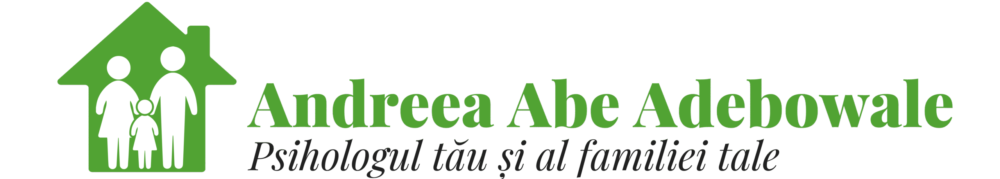
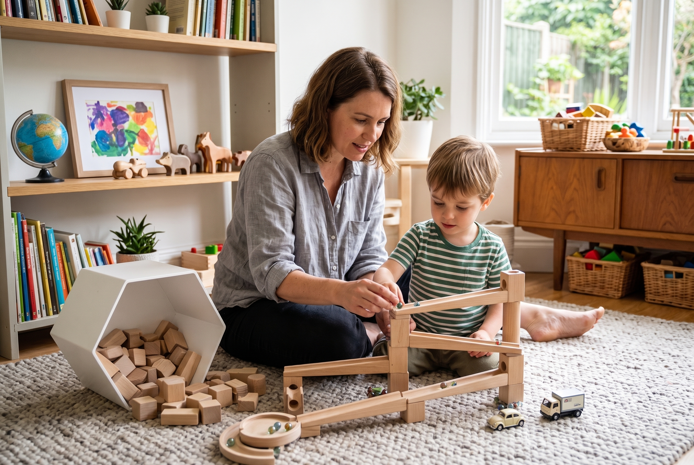
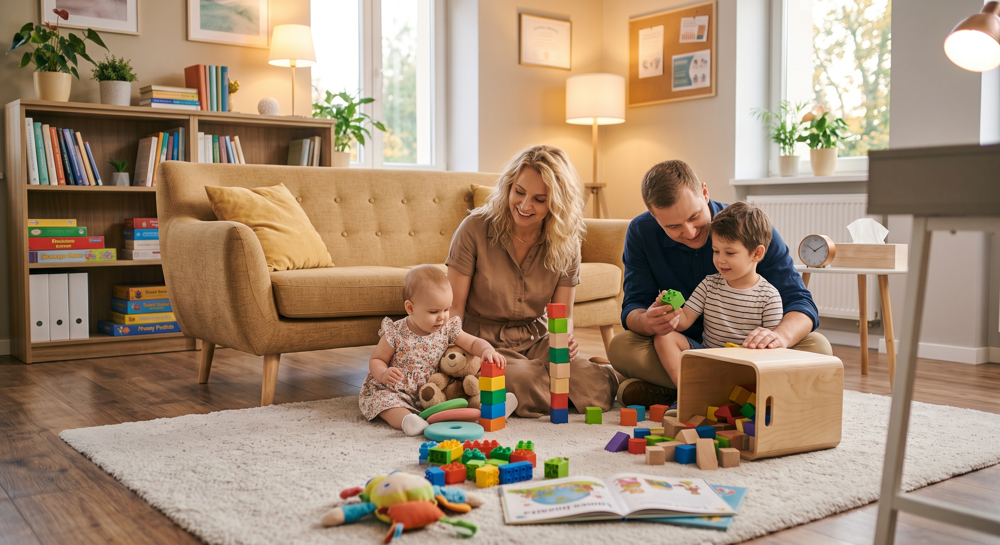
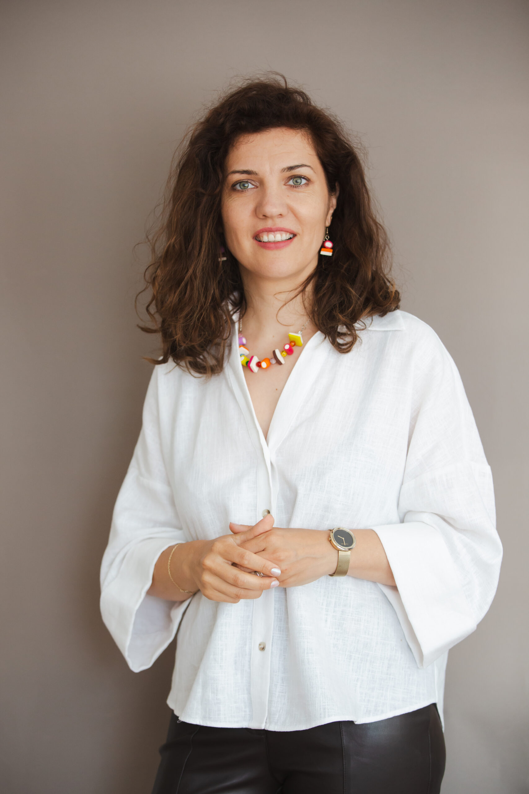

Practică clinică
Practică clinică integrativ-relațională
Nimeni nu există izolat. Ce se întâmplă cu un copil se înțelege cel mai bine în relație — cu părinții lui, cu familia, cu etapa lui de dezvoltare.
Descoperă modelul celor patru clienți

ContactNimeni nu există izolat. Ce se întâmplă cu un copil se înțelege cel mai bine în relație — cu părinții lui, cu familia, cu etapa lui de dezvoltare.
Descoperă modelul celor patru clienți
Nu tratez dificultatea copilului izolat de context. O înțeleg în relație cu cei din jurul lui — și de acolo pornesc.
Fiecare dintre cei patru are un mod propriu de a fi implicat în proces. Alegem împreună, încă de la discuția inițială, cine anume — unul, doi sau toți patru.

Terapie individuală, adaptată vârstei lui — un spațiu doar al lui, pentru ce încă nu poate pune în cuvinte.
Vezi pagina
Sprijin pentru tine ca părinte — să înțelegi ce se întâmplă cu copilul tău și cum poți ajuta, fără să te simți singur în asta.
Vezi pagina
Uneori clientul e relația dintre ei.
Vezi pagina
Familia are propriile tipare, care se repetă indiferent cine e «problema» de moment. Acolo, uneori, e nevoie să lucrăm — cu sistemul, nu cu o singură persoană din el.
Nu toate cazurile au nevoie de toți cei patru — alegem împreună cine e relevant, pornind de la ce aduceți.
De la primul contact până la stabilirea planului de intervenție, procesul are câțiva pași clari:
Primul contact, un scurt schimb de informații despre ce te aduce în acest moment.
Vorbim despre situație și despre ce anume este nevoie.
Decidem cine ar trebui implicat: copilul, părintele, relația dintre ei sau familia.
Înțelegem cum funcționează, de fapt, cei implicați — dincolo de ce se vede la suprafață, prin instrumente și discuții potrivite.
Punem cap la cap tot ce am aflat, dintr-o perspectivă relațională.
Construim o imagine de ansamblu asupra dificultății și a contextului ei.
Stabilim împreună forma de lucru potrivită și pașii următori.
Parcursul se adaptează la ce este nevoie de fiecare dată — nu urmează mereu toți pașii, în aceeași ordine.

Dacă simți că te regăsești în ce ai citit până acum, sunt aici.